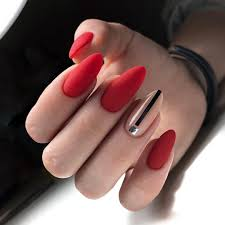
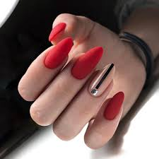

Многие сегодня отдают предпочтение европейскому маникюру. Это хороший маникюр, позволяющий бережно относиться к своим рукам. Суть гигиенической процедуры заключается в том, что ороговевшую ткань вокруг ногтевой пластины аккуратно удаляют стеклянной палочкой. Кутикула отодвигается деревянной лопаткой. На ноготь наносится фруктовое масло. Такой вид маникюра совершенно безопасен, его просто выполнить дома. Чем чаще производить процедуру, тем быстрее ваши ноготочки запомнят «правильную» форму и перестанут «зарастать». При работе с кутикулой пользуйтесь качественными размягчителями. При работе с апельсиновой палочкой или кюреткой с маленькой ложечкой проявите осторожность: можно повредить тонкую кожу кутикулы.
Данный вид маникюра не исключает процедуру «мацерации» (замачивания ногтей) при надобности, применяемую в классическом маникюре.